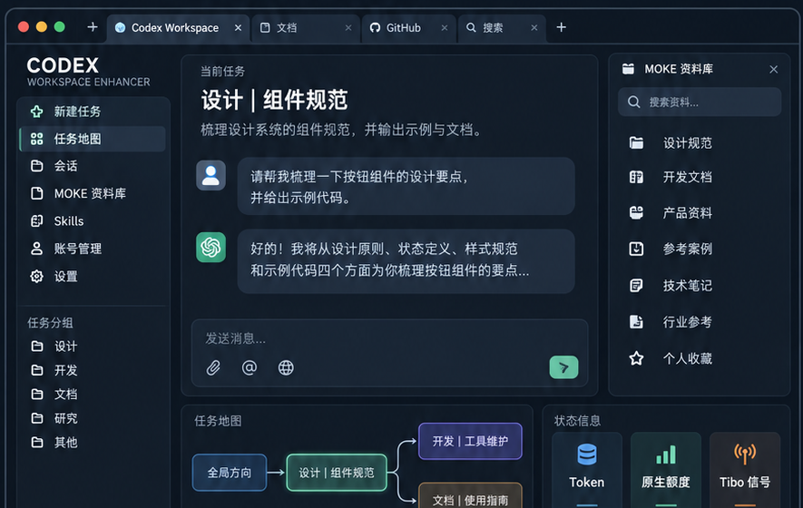

CLOUD LIBRARY 01
MOKE
设计、开发与工作流资料。用分类和搜索做第一轮筛选，再取需要的正文。
分类浏览 · Skill 预览 · MCP 搜索
这次更新，把 MOKE 与 VSC 两个云端资料库带进 Codex 工作台。先筛选，再按需通过 MCP 搜索正文。
MOKE 负责设计与工作流资料，VSC 负责 AI 影像创作资源。界面做初筛，正文交给 MCP。

云端资料 · MCP 按需取用
设计、开发与工作流资料。用分类和搜索做第一轮筛选，再取需要的正文。
AI 图片与视频创作资源。把提示词、风格与参考案例，收进同一条工作流。
资料库界面保持轻量，缓存负责稳定展示，真正的正文按需调用 MCP。
任务、地图、Skills、资产和资料库共享同一套工作台，不把 Codex 工作流拆散。